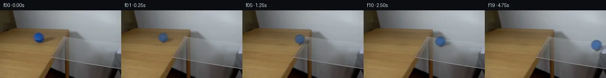

![首帧]()

Round 00
2026-11-05T12:06:49.394338+00:00像素候选变化代码 +233/−0inspection 更新
pixels b1e9ccbd228d068e · code 69e029706b5cd09c
查看本轮 generate.py 真实 diff
--- previous/generate.py
+++ current/generate.py
@@ -0,0 +1,233 @@
+"""
+PixelWorld case_0027 - blue tennis ball rolls from the wooden table over the
+clear glass sheet resting on the table edge.
+
+Method (local pixel math only):
+ * static background = first frame with the ball and its contact shadow
+ inpainted out of the wood surface (per-row interpolated fill + synthesised
+ horizontal wood grain);
+ * procedural shaded sphere per frame, tennis-ball seam mapped through the
+ rolling rotation (no-slip spin about the screen-horizontal axis);
+ * empirical contact-shadow multiplier field re-extracted from frame 0 and
+ rigidly carried with the ball;
+ * shutter motion blur by averaging sub-samples along the trajectory.
+Frame 0 is the supplied first frame, byte for byte.
+"""
+import sys, math
+from pathlib import Path
+import numpy as np
+from PIL import Image
+from scipy.ndimage import gaussian_filter
+
+HERE = Path(__file__).parent
+sys.path.insert(0, str(HERE))
+import artifact_io
+
+W, H, N = 256, 144, 20
+rng = np.random.default_rng(2701)
+
+first = np.array(Image.open(HERE / 'first_frame.png').convert('RGB'))
+assert first.shape == (H, W, 3)
+
+# ---------------------------------------------------------------------------
+# 1. Static background: inpaint the ball + shadow off the wood table.
+# ---------------------------------------------------------------------------
+bg = first.astype(float).copy()
+
+PATCH_X0, PATCH_X1, PATCH_Y0, PATCH_Y1 = 66, 118, 46, 71
+for y in range(PATCH_Y0, PATCH_Y1):
+ lc = first[y, 60:66].reshape(-1, 3).mean(axis=0)
+ rc = first[y, 118:122].reshape(-1, 3).mean(axis=0)
+ for x in range(PATCH_X0, PATCH_X1):
+ t = (x - PATCH_X0) / (PATCH_X1 - PATCH_X0)
+ bg[y, x] = lc * (1 - t) + rc * t
+
+# horizontal wood grain: long smooth streaks along x, short along y
+noise = gaussian_filter(rng.normal(size=(H, W, 3)), sigma=(1.05, 5.5, 0))
+# per-row grain amplitude measured on the clean wood to the left
+base_smooth = gaussian_filter(first.astype(float), sigma=(0, 6, 0))
+row_std = np.zeros((H, 1, 1))
+for y in range(PATCH_Y0, PATCH_Y1):
+ res = first[y, 2:60].astype(float) - base_smooth[y, 2:60]
+ row_std[y, 0, 0] = max(1.0, res.std())
+# feather grain to zero near the patch borders so no seam is visible
+wx = np.ones(W)
+wx[:PATCH_X0 + 5] = np.clip((np.arange(PATCH_X0 + 5) - PATCH_X0) / 5, 0, 1)
+wx[PATCH_X1 - 5:PATCH_X1] = np.linspace(1, 0, 5)
+wy = np.ones(H)
+wy[PATCH_Y0:PATCH_Y0 + 3] = np.linspace(0, 1, 3)
+wy[PATCH_Y1 - 3:PATCH_Y1] = np.linspace(1, 0, 3)
+win = (wy[:, None] * wx[None, :])[:, :, None]
+grain = noise * row_std * win
+patch_mask = np.zeros((H, W, 1))
+patch_mask[PATCH_Y0:PATCH_Y1, PATCH_X0:PATCH_X1] = 1.0
+bg = bg + grain * patch_mask
+
+# ---------------------------------------------------------------------------
+# 2. Empirical contact shadow field from frame 0 (luminance multiplier).
+# ---------------------------------------------------------------------------
+orig_lum = first.astype(float).mean(axis=2)
+bg_lum = bg.mean(axis=2)
+shadow_a = np.clip((bg_lum - orig_lum) / np.maximum(bg_lum, 1), 0, 0.6)
+# keep only the soft blob to the right of the ball contact
+sy, sx = np.mgrid[0:H, 0:W]
+ell = ((sx - 93.0) / 17.0) ** 2 + ((sy - 63.5) / 8.0) ** 2
+shadow_a *= np.clip(1.35 - ell, 0, 1)
+blueish = (first[..., 2].astype(int) - first[..., 0].astype(int)) > 30
+shadow_a[blueish] = 0
+shadow_a = gaussian_filter(shadow_a, 0.9)
+shadow_a = np.clip(shadow_a, 0, 0.55)
+
+SH_Y0, SH_Y1, SH_X0, SH_X1 = 56, 72, 85, 116
+shadow_patch = shadow_a[SH_Y0:SH_Y1, SH_X0:SH_X1]
+
+# ---------------------------------------------------------------------------
+# 3. Ball appearance model (parameters fitted to the frame-0 ball).
+# ---------------------------------------------------------------------------
+C0 = np.array([28.7, 68.6, 125.3]) # dark-side body color
… diff truncated; 146 more lines …